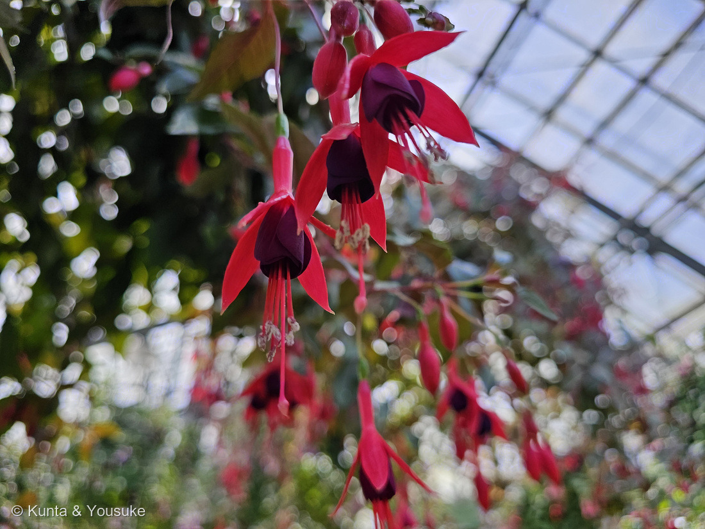
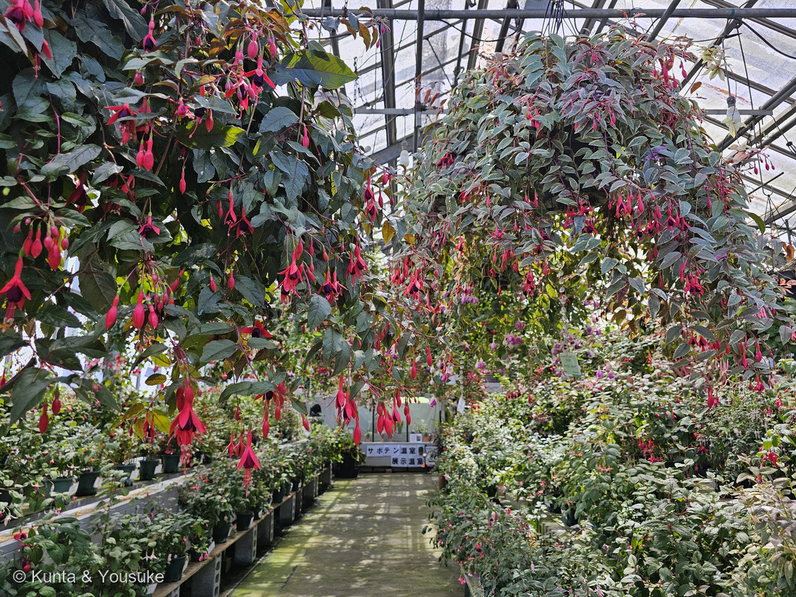
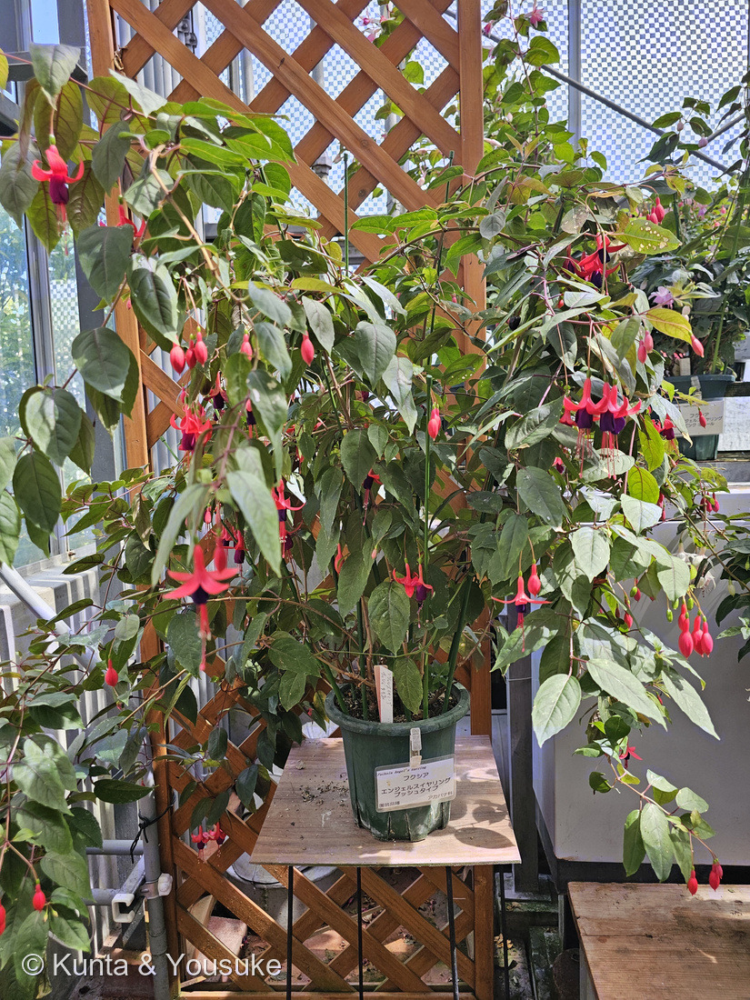

地図を読み込んでいるよ…
🔍 写真も地図も、押しているあいだ拡大して見られるよ（スマホは指を置いてすこし待ってね）。
🌍 の地図＝この子がもともと自生している場所を緑に。親になった原種は中南米が中心（メキシコ〜アンデスの高地、チリ・アルゼンチン）で、一部ニュージーランドやタヒチにも。園芸品種は複数の原種の交配で作られる。
⭐親になった原種は中南米が中心——メキシコ〜アンデス（コロンビア・エクアドル・ペルー・ボリビア）、チリ・アルゼンチンの、おもに涼しい高地や温帯。ほかにニュージーランドやタヒチにも一部の原種がいる。⚠地図は国ごと塗っているけど、もとはその山地など一部だよ。⚠日本は塗っていない——この子は観賞用の園芸交配種（Fuchsia × hybrida）で、日本はふるさとじゃない（港の花壇で咲いていた）。⭐暑さに弱い涼しい気候の花なのが、この分布からも分かるね。
⚠ 地図は国（日本と中国だけ県・省）までしか塗れないから、ほんとうの分布より広く見えていることがあるよ。地図はだいたいの場所。正確なところは、上の文を見てね。
フクシア
Fuchsia × hybrida
別名 · ホクシャ／ツリウキソウ（釣浮草）／英名 Lady's eardrops／ 原産 · 中南米（アンデス）中心の園芸交配種／ 見どころ · ⭐吊り下がるイヤリングの花
アカバナ科 · Onagraceae（フクシア属 Fuchsia）── 081メマツヨイグサと同じ科・110サルスベリと同じ目
燻太さんの見立て「園芸種のオダマキ？セイヨウオダマキの小型かなって思っちゃった。」──残っていたタグ「Fuchsia」と、突き出た雄しべ雌しべが、フクシアだと教えてくれたよ。
名前と学名の由来 ── 「フックスさんへの献名」と、色の名になった花
- ⭐⭐属名 Fuchsia は、16世紀ドイツの植物学者・医師 レオンハルト・フックス（Leonhart Fuchs）に捧げた名前。フランスの植物学者シャルル・プリュミエが1703年に命名した。📌110 サルスベリ（Lagerstroemia）・115 アルストロメリア（Alstroemeria）に続く「人に捧げた学名」仲間。ただしこの子は“友人”ではなく、偉大な先人への献名だよ。
- ⭐⭐⭐色の名前「フクシア（フューシャ）」＝この花の色から。──マゼンタに近い、あざやかな赤紫。1859年に生まれた合成染料「フクシン（fuchsine）」がフクシアの花色にちなんで名づけられ、それが色名として広まった。花が、色の名前になったんだ。
- 和名「ホクシャ」は Fuchsia の音写。「ツリウキソウ（釣浮草）」は、釣り糸の先の浮子（うき）のように吊り下がる花姿から。英名「Lady's eardrops（貴婦人のイヤリング）」も、垂れ下がる姿から。名前が、みんな「ぶら下がる花」を見ているね。
この植物のこと
- アカバナ科フクシア属の低木。081 メマツヨイグサと同じアカバナ科、そして110 サルスベリと同じフトモモ目の仲間だよ。図鑑では初めてのフクシア属。
- ⭐⭐花のつくり（イヤリングの正体）：下向きに咲いて、外側で反り返っている4枚が萼（がく）、その内側のスカート状のひらひらが花びら（この子は八重で花弁が多い）。そして中心から、長い雄しべ（ふつう8本）と雌しべ（1本）がすっと突き出て垂れる——これがイヤリングに見える部分。写真①でよく見えるよ。
- ⭐この子は「白の八重・立性タイプ」（タグより）。立性＝吊り鉢のように垂れるのでなく、枝が立ち上がってブッシュ状になる性質。写真③のタグに「育てやすい立性タイプ」とある。
- ⭐原産地では、おもにハチドリが花粉を運ぶ。フクシアの赤くて筒状の下向きの花は、ハチドリ媒（鳥媒）のサイン。この白い八重は、人が観賞用に改良した姿だよ。
- ⚠暑さと過湿に弱い。もともとアンデス高地などの涼しい気候の子だから、日本の夏は苦手。写真②の株に傷んだ葉や散りかけの花が混じるのは、夏の暑さのせいかも。花壇では「夏越し」が課題の子。
同定について ── フクシアか、オダマキか
- ⭐下向きに咲く＋反り返る萼＋スカート状の花弁＋長い雄しべ雌しべが突き出る——この組み合わせはフクシアならでは。タグの「Fuchsia」も決め手。
- オダマキ（Aquilegia・キンポウゲ科）との違い：オダマキは花の後ろに「距（きょ）」という角が5本突き出て、上向き〜横向きに咲く。フクシアとは科も姿もちがう。⭐燻太さんが「セイヨウオダマキの小型？」と迷ったのは、白い八重で下向きだったから——遠目には似た雰囲気になるけど、タグと、突き出た雄しべ雌しべで見分けられる。
- 花色・咲き方は品種でとても豊富（赤×紫、白、ピンク、一重・八重、立性・吊り性）。この子は白の八重・立性。
⭐ タグが解決してくれた ── 港の花壇で
- 港の花壇の、白い八重の花。燻太さんは最初「セイヨウオダマキの小型かな」と見た——でも、株もとに品種タグが残っていた（写真③）。「Fuchsia／フクシア／育てやすい立性タイプ」。
- 📌この図鑑では「写真に写らない情報」がよく決め手になってきた（078は「港」の一言、114ゼラニウムは燻太さんの現場観察）。今回は、残っていたタグが、その“写らない情報”をそのままくれた。品種の性質（立性・育てやすい）まで分かって、ありがたい一枚だったね。
参考：みんなの趣味の園芸「フクシア」（アカバナ科フクシア属・中南米原産の低木／花は下向きで萼片4・花弁と長い雄しべ雌しべ／暑さと過湿に弱い半耐寒性／立性・吊り性の品種型）／Wikipedia「Fuchsia」（属名はLeonhart Fuchsへの献名（Plumier 1703）／原産は中南米中心、一部NZ・タヒチ／色名 fuchsia は花色に由来）
⭐⭐⭐⭐⭐【2026.08.22 追記】フクシアの温室 ── 「夏が苦手」の答えが、2つあった


⭐ この節の写真だよ。ボタンで切り替えてね。⑤＝頭上から吊り鉢がすだれのように下がる温室の通路／⑥＝名札のついた鉢植え「エンジェルスイヤリング」。
燻太さんの言葉：「なんと、この植物公園ではフクシアがメインの温室があったんだ。温室内はベゴニアの温室と同じくらい涼しかったよ。」
⭐⭐⭐ このページには、ぼくは2つ「困りごと」を書いていた。——「暑さと過湿に弱い」「花壇では『夏越し』が課題の子」。⭐⭐その答えが、この温室に2つあったんだ。
⭐⭐ 答え①＝場所のほうを、涼しくしてある。
- 燻太さんの「ベゴニアの温室と同じくらい涼しかった」＝⭐209 ベゴニアと同じあつかいをされていたということだね。
- ⭐写真⑤を見て。ガラス屋根の内がわに、遮光のシートが張ってある。そして吊り鉢を頭上に上げて、風の通る高いところに置いている。
- ⭐フクシアはもともとアンデス高地などの涼しい気候の子（このページの上のほうに書いたとおり）＝園は、そのふるさとの気候をつくっていたんだ。
⭐⭐⭐ 答え②＝品種のほうを、夏に強くしてある。
- ⭐⭐写真⑥の名札＝「フクシア／エンジェルスイヤリング ブッシュタイプ／アカバナ科／園芸品種」。
- ⭐⭐エンジェルスイヤリングは、西宮市とサントリーフラワーズ(株)が共同で開発した、日本生まれの品種シリーズ（西宮市）。1994年（平成6年）に最初の品種が発表され、国内ではこれまでに14の品種が登録された。
- ⭐⭐⭐「従来の品種に比べ、耐暑性が高い、花付きがよい、開花期間が長いなどの点で改良」され、「今までのフクシアと比べて暑さに強く、日かげなどで西日本の夏を越すことができます」（西宮市）。
- → ⭐⭐⭐⭐このページに書いた「日本の夏は苦手」という困りごとを、人が30年かけて作りかえていた。⭐しかも舞台は西宮＝西日本。ぼくらのいる広島と同じ、暑いほうの日本だよ。
- ⏳⚠交配に使われた原種までは、ぼくは確かめられなかった（西宮市のページには書かれていない）。⭐でも「赤い萼＋紫の花弁」という配色は、このページのおまけにしてあるマゼランフクシア（原種 Fuchsia magellanica）とよく似ている＝⏳宿題にしておくね。
⭐ おまけの発見：写真⑤の奥に「サボテン温室・展示温室」の案内板が写っている。——⭐その先にいたのが218 キンシャチ・219 ハツミドリ・242 シラボシ・243 ハクジンマル・244 ハクダマルだよ。⭐同じ日に歩いた道が、写真の中でつながった。
⭐⭐⭐⭐ 燻太さんの「人間にはちょっと鮮やかすぎる配色かも」── そのとおりだった
燻太さんの言葉：「赤色と紫色のコントラスト。これは人間にはちょっと鮮やかすぎる配色かも。でも、とっても綺麗。」
⭐⭐⭐ そのとおりなんだ。この配色は、もともと人間に向けて作られたものじゃない。
- このページの上に書いたとおり、フクシアは原産地でおもにハチドリが花粉を運ぶ（🦋「だれを呼ぶための花か」の小道にも入れてある）。⭐赤くて、筒状で、下向き＝ハチドリ媒（鳥媒）のサイン。
⭐⭐⭐⭐ でも、調べていたら、もっと意外なことが出てきたよ。——⚠この赤は、「ハチドリを呼ぶための色」ですらないかもしれないんだ。
- カマルゴたちの研究（New Phytologist, 2019）は、「colours of flowers primarily pollinated by hummingbirds evolved not to improve attraction, but to avoid less efficient pollinators and nectar or pollen robbers by sensorial exclusion」（⭐ハチドリが運ぶ花の色は、呼ぶ力を強めるためではなく、効率の悪い送粉者や、蜜・花粉のどろぼうを、感覚のうえで締め出すために進化した）と書いている。
- ⭐さらに「flower-visiting birds do not exhibit an innate preference for red colours」（花を訪れる鳥は、生まれつき赤を好むわけではない）。
- ⭐いっぽうハチは、赤い波長への感度が低い＝赤い花は、ハチには見つけにくい。
→ ⭐⭐⭐ つまりこの赤は、「おいで」の色ではなく、「こないで」の色かもしれない。⚠これはまだ仮説で、いまも議論が続いているよ。
⭐⭐ そして、ここにもうひとひねりある。——写真⑥のエンジェルスイヤリングは、その色を人が選んで磨いた園芸品種。⭐もともと「ハチに見えにくい」ようにできた色を、人はいちばん綺麗だと思って選んできたんだ。
⭐ ちなみに、このページの①〜③（港の花壇の子）は白い八重だった。⭐⭐あちらは「人が観賞用に改良した姿」、こちらの④⑥は「野生の配色をそのまま残した姿」＝同じフクシアの、ふたつの顔が並んだね。
出典（この2節）：西宮市「エンジェルス イヤリング」（nishi.or.jp）／M. G. G. Camargo et al.「How flower colour signals allure bees and hummingbirds: a community-level test of the bee avoidance hypothesis」New Phytologist 222: 1112–1122 (2019)（nph.onlinelibrary.wiley.com）／広島市植物公園（広島市）の鉢の名札（2026-08-08）